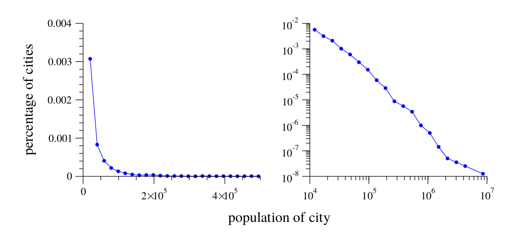
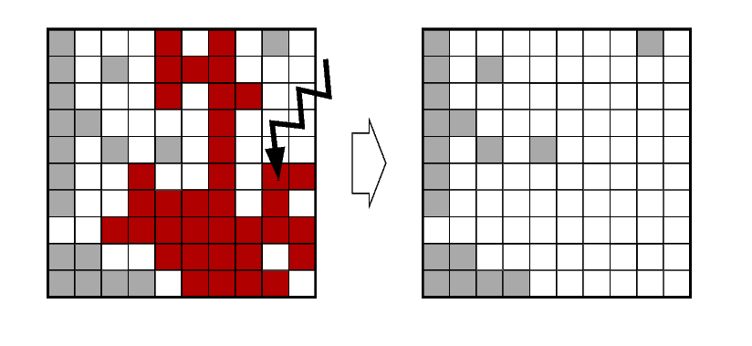

Power laws' guide
Una introducción al estudio de las leyes de potencias
Bart Ortiz from GeNeura research group
Based on J. Newman paper
Introducción
Un clásico: la campana de Gauss
Pero no todo lo que ves es Gaussiano.
Sea $p(x)dx$ la fracción de ciudades con población entre $x$ y $dx$.
Si el histograma sigue una linea recta en un grafico a escala log-log $$\implies log(p(x))=-\alpha log(x)+c$$ donde $\alpha$ y $c$ son ctes.
Tomando exponente a cada lado obtenemos:
$$p(x)=Cx^{-\alpha}$$con $C=e^c$
Mediciones
Identificar una ley de potencias en la práctica es complicado.
Plotear es una forma común de contrastar nuestra hipótesis pero debemos tener CUIDADO
Caso práctico
Efectos del ruido en nuestros gráficos
¿Apaños?
Variar el tamaño de los intervalos (normalizando) o usar la funcion de distribucion acumulada.
¿Apaños?
$$P(x)=\int_x^{\infty}p(z)dz $$
$$P(x)=C\int_x^{\infty}z^{-\alpha}dz=\frac{C}{\alpha-1}x^{-(\alpha-1)} $$Estimación de $\alpha$
$$\alpha=1+n(\sum_{i=1}^{n}log\frac{x_i}{x_{min}})^{-1}$$ $$\sigma = \sqrt{n}(\sum_{i=1}^{n}log\frac{x_i}{x_{min}})^{-1}=\frac{\alpha -1}{\sqrt{n}}$$Ejemplos
Como se va a poder comprobar, las leyes de potencias aparecen en muchos procesos de índole natural, tecnológica, social, etc.
Esta persistencia nos lleva a preguntarnos qué mecanismos están detrás de la formación de estas distribuciones (o incluso si hay un único mecanismo).
Más patrones extraños

Algunas ideas matemáticas
Normalización
$$1=\int_{x_{min}}^{\infty}p(x)dx=C\int x^{-\alpha}dx=$$ $$=\frac{C}{1-\alpha}[x^{-alpha+1}]^{\infty}_{x_{min}}$$ Flag: $\alpha>1$Momentos
$$\bar{x}=\int_{x_{min}}^{\infty}xp(x)dx=C\int_{x_{min}}^{\infty}x^{-\alpha+1}dx=$$ $$=\frac{C}{2-\alpha}[x^{-\alpha+2}]^{\infty}_{x_{min}}$$ $Flag: \alpha>2$80/20 Rule
¿Dónde cae el grueso de la distribución?
Suponiendo que la media esté bien definida tenemos un valor que corta a la poblacion en dos: $x_{1/2}$ $$\int_{x_{1/2}}^{\infty}p(x)dx=1/2\int_{x_{min}}^{\infty}p(x)dx$$ donde $$x_{1/2}=2^{1/\alpha-1}x_{min}$$¿Qué cantidad hay en la mitad superior?
$$2^{-(\alpha-2)/(\alpha-1)}$$80/20 Rule
LLevándolo al caso general
Sea W(x) el conjunto de personas de nuestra distribucion que exede cierta cantidad x: $$W(x)=\frac{\int_{x}^{\infty}zp(z)dz}{\int_{x_{min}}^{\infty}zp(z)dz}=(\frac{x}{x_{min}})^{-\alpha+2}$$Libre de escala (Scale-free)
Nuestra distribucion es invariante bajo cambios de escala.
Sea una distribución $p(x)$ que verifique $p(bx)=g(b)p(x)$ para cualquier b. Sea $x=1$ : $g(b)=p(b)/p(1)$. Entonces $p(bx)=\frac{p(b)p(x)}{p(1)}$. Como es cierta para todo b, podemos derivar: $xp'(bx)=\frac{p'(b)p(x)}{p(1)}$.Mecanismos de creación
El hecho de que las leyes de potencias sean tan comunes provoca un esfuerzo por encontrar mecanismos (modelos) basados en el mundo real que reproduzcan esta distribución.Proceso de Yule
Proceso que nace inspirado en biología.
Cantidades como el tiempo de vida pueden ofrecer características de leyes de potencias. Sin embargo, un ejemplo muy claro es la distribución del número de especies segun género, familia y el resto de órdenes taxonómicos.
Yule ofreció un método simple como explicación.
Proceso de Yule
Supongamos un escenario donde nuevas especies aparecen pero nunca se extingue (principal hipótesis y fallo)
Las especies se seperan en distintos generos por la especialización (asumamos con una constante estocástica $k$).
Transiciones de Fase y criticalidad
Transiciones de Fase y criticalidad
Transiciones de Fase y criticalidad

Transiciones de Fase y criticalidad
Criticalidad auto-organizada
Criticalidad auto-organizada
Criticalidad auto-organizada
Y muchos más
Combinaciones de exponenciales, inversión de cantidades, camino aleatorio, etc.
Conclusiones
- Área de mucho interés
- Aún nos queda mucho por aprender
- Aunque no es oro todo lo que reluce
“ Perhaps our ultimate understanding of scientific topics is measured in terms of our ability to generate metaphoric pictures of what is going on. Maybe understanding is coming up with metaphoric pictures”Per Bak (1996). How Nature Works: the science of self-organized criticality